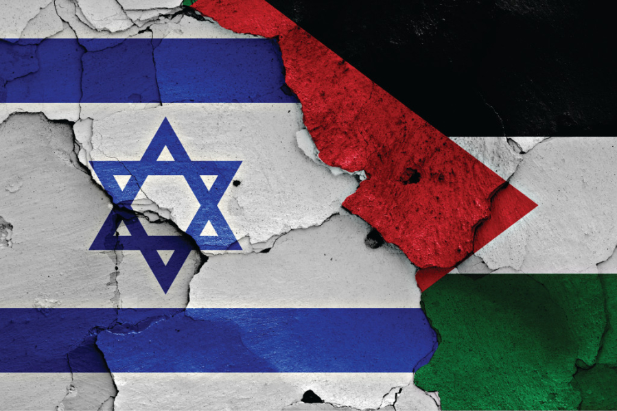
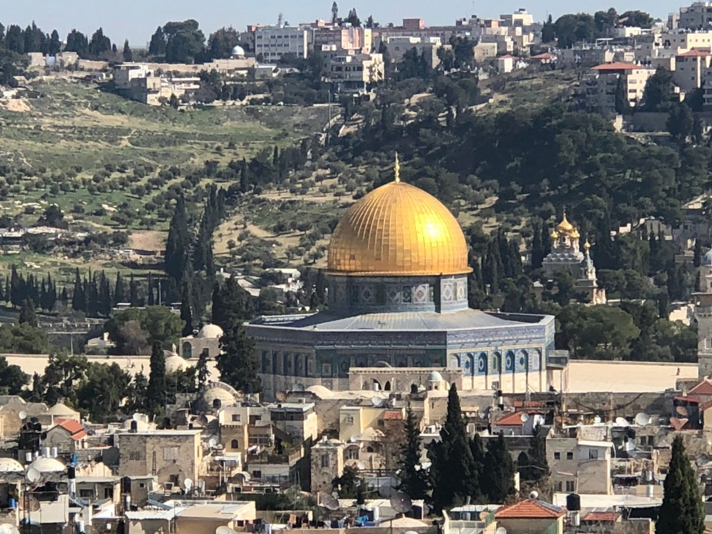

O Laos (República Popular Democrática do Laos) é um país localizado no sudeste asiático que tem como capital a cidade de Vietname. Com aproximadamente sete milhões de habitantes, a língua falada pela população e seu gentílico é laociano.
Figura 14 - Bandeira de Laos

Fonte: WIKIPEDIA, 2023
A história do Laos se inicia há milhares de anos atrás, com vestígios arqueológicos datados de mais de 36 mil anos atrás. Na segunda metade do século XIII, Fa Ngum estabeleceu o primeiro reino unificado de Laos; depois de um período próspero, o reino de Laos enfrentou conflitos territoriais com a Tailândia e Mianmar durante o século XVI.
Embora a ordem tenha sido restaurada por um breve período no século XVII, os conflitos ressurgiram e, no final do século, o Laos foi anexado pelo Vietnã. Após o período do Reino de Lan Xang, houve a dissolução deste e a criação de três outros reinos independentes. Isso ocorreu porque Lan Xang se recusou a se subordinar ao Vietnã e buscou manter distantes os territórios dos países vizinhos.
A história laociana é extensa porém partiremos de um ponto específico, com a “Missão Pavie” com Auguste Pavie sendo enviado ao Laos em 1879. Ele passou muito tempo em Luang Prabang, enquanto ele estava lá, a cidade foi saqueada no ano de 1887 pelos chineses.
Segundo a história que contava Auguste Pavie, ele teria salvo a vida do rei Oun Khaun que ficou tão grato que teria prometido o reino para a França e também o presenteou com a história escrita do Laos baseada em narrativas populares. Ao chegar na França o texto foi traduzido e se tornou o primeiro texto sobre a história do Laos e o primeiro contato dos ocidentais com ela.
É importante destacar a “Missão Pavie” porque a história e cronologia do Laos parte de uma perspectiva dominante com o colonialismo.
Figura 15 - August Pavie

Fonte: BRITANNICA, 2023
<1h id="titulo-margem">2 O COLONIALISMO NO LAOSO território que hoje é o estado moderno do Laos é resultado do colonialismo francês que dominou o Laos de 1889 a 1949, após o colapso o reino Lan Xang Hom Khao fragmentou-se em estados-clientes dominados pelo reino de Sião. No período de 1862-3, o Império francês incorporou o Camboja e Cochinchina à sua jurisdição e iniciou missões de exploração para o interior do continente.
Após uma curta guerra com Sião em 1893, o Laos foi anexado e em 1898 todas as colônias francesas do sudeste asiático foram consolidadas na Indochina Francesa. A monarquia do Laos em Louangphabang manteve somente uma autonomia simbólica.
- Guerra Árabe-Israelense de 1948: Logo após a declaração de independência de Israel, cinco países árabes - Egito, Síria, Jordânia, Líbano e Iraque - invadiram Israel em uma tentativa de destruir o novo estado. Israel conseguiu resistir aos ataques e, após um conflito que durou cerca de um ano, conseguiu garantir sua independência.
- Guerra dos Seis Dias (1967): Em junho de 1967, Israel entrou em conflito com Egito, Jordânia e Síria, em uma guerra que durou apenas seis dias. Israel conseguiu uma vitória decisiva, conquistando o Sinai, a Faixa de Gaza, a Cisjordânia, Jerusalém Oriental e as Colinas de Golã. Essa guerra teve um grande impacto na região e é considerada um dos momentos decisivos na história de Israel e do Oriente Médio. É importante lembrar que Israel enfrentou outras guerras e conflitos ao longo de sua história, incluindo a Guerra do Yom Kipur (1973), a Guerra do Líbano (1982), a Intifada (1987-1993) e os conflitos recentes em Gaza.
2 CONFLITO ISRAELENSE-PALESTINO
A questão da Palestina é um dos conflitos mais longos e complexos da história moderna. Desde a década de 1940, Israel e os palestinos têm lutado pelo controle da terra e da autodeterminação.
Figura 12 - Conflito Israelense-palestino.
Fonte: Brasil Escola, 2023
Em 1947, as Nações Unidas aprovaram um plano de partilha da Palestina, que propunha a criação de dois estados, um judaico e outro árabe. Israel aceitou o plano, mas os palestinos e os países árabes vizinhos o rejeitaram.
Em 1948, Israel declarou sua independência e foi atacado por países árabes vizinhos, dando início à Guerra Árabe-Israelense de 1948. Ao final da guerra, Israel havia conquistado mais territórios do que o proposto pela ONU, incluindo a Cisjordânia e Gaza.
Desde então, os palestinos têm lutado pela criação de seu próprio estado, enquanto Israel afirma seu direito à segurança e defesa de seu território. A história do conflito é marcada por guerras, atentados, negociações fracassadas e a construção de assentamentos israelenses em território palestino, o que tem levado a tensões e violência constantes.
Atualmente, a situação na região continua tensa e sem solução, com muitas questões ainda em aberto, como a questão dos assentamentos, a segurança de Israel e a criação de um estado palestino independente.
"Para os palestinos, Jerusalém é a chave para a paz ou a guerra. Para os israelenses, é a chave para a sobrevivência ou a morte." - Sari Nusseibeh, ex-reitor da Universidade de Al-Quds.
No século XIX, com o aumento do movimento sionista, os judeus começaram a retornar a Jerusalém. Em 1948, quando Israel declarou sua independência, Jerusalém foi dividida entre Israel e a Jordânia, com Israel controlando a parte ocidental da cidade e a Jordânia controlando a parte oriental, incluindo a Cidade Velha.
Em 1967, durante a Guerra dos Seis Dias, Israel conquistou a parte oriental de Jerusalém, incluindo a Cidade Velha, e anexou-a, declarando Jerusalém como sua capital "eterna e indivisível". No entanto, a anexação não é reconhecida internacionalmente e a questão do estatuto de Jerusalém continua sendo uma questão controversa e não resolvida na política internacional.
Jerusalém é uma cidade importante para a guerra da Palestina porque é vista como um local sagrado por judeus, cristãos e muçulmanos. A cidade é o centro do conflito israelense-palestino porque os dois povos reivindicam o controle sobre a cidade, especialmente a Cidade Velha, que contém locais sagrados para as três religiões.
Por que Jerusalém é importante para a guerra da Palestina?
Figura 13 - O reconhecimento de Jerusalém como capital de Israel pelos EUA pode causar prejuízos ao processo de paz no Oriente Médio.
Fonte: MAPA NA MÃO, 2023
Para os judeus, Jerusalém é a capital histórica e espiritual do Estado de Israel, e o Monte do Templo é o local onde ficava o Templo de Jerusalém, o local mais sagrado do judaísmo. Para os muçulmanos, Jerusalém é a terceira cidade mais sagrada do islã, depois de Meca e Medina, e o local contém o Domo da Rocha e a Mesquita de Al-Aqsa, que são lugares de grande importância religiosa.
Para os palestinos, a questão de Jerusalém é uma das principais questões na luta por um Estado palestino independente. A cidade é vista como um símbolo de sua identidade nacional e religiosa, e a Cidade Velha é considerada uma parte importante do futuro Estado palestino.
Portanto, a disputa sobre Jerusalém é uma das principais razões pelas quais a guerra da Palestina continua sem solução há décadas. Ambos os lados têm reivindicações legítimas sobre a cidade, o que torna a questão extremamente complexa e delicada para ser resolvida.
"Jerusalém é uma cidade de muitas camadas e muitas culturas, uma cidade que sempre foi cobiçada por aqueles que buscam poder e controle." - Tony Blair, ex-primeiro-ministro do Reino Unido